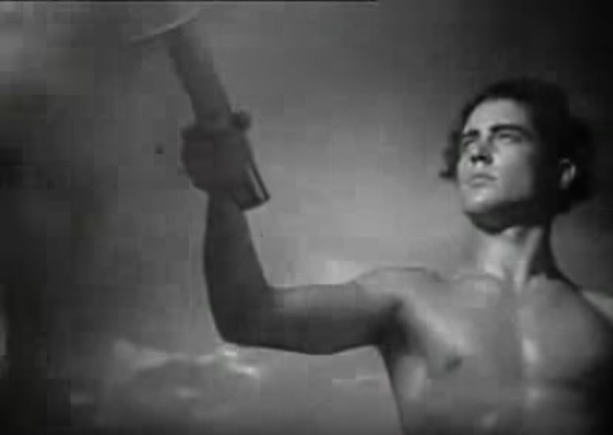

How a core tradition of the Olympics rose out of Nazi Germany
Scenes of smiling, cheering crowds dot the history of the Olympic torch relay. Such images stretch back to its founding during the 1936 Berlin Games, commonly called the Nazi Games.
The International Olympic Committee calls the torch relay a symbol of peace and cooperation, a link between the ancient and modern worlds. It’s a symbol that travels the world, leaving its mark and inspiring generations, said Olympic historian Philip Barker.
“I’ve always found it quite emotional, actually,” said Barker, a London-area resident. “The whole idea that you get two people meeting when they exchange the torch and they’ll probably never meet again in their lives. And yet, for that moment, you’re together.”
The relay almost always kicks off in Greece, where a high priestess uses a parabolic mirror, a mirror that concentrates sunlight, to create fire. The priestess passes the flame to a male Greek runner. The runner then sets off on a journey meant to mark the start of Olympic times and a period of peace.
Yet, the relay is no stranger to controversy.
“Carrying the flame” exists as an accessible and digestible resource for undercovered stories about the Olympic torch relay. It acts as a one-stop shop for records and other sources that might be helpful in covering the relay in a more meaningful way.
Read more about the projectNazi Games
The first relay started in 1936, surrounded by the looming threat of war, Nazis and calls for a boycott of the Berlin Olympics.
The relay came from a demand for propaganda, even though the Nazis originally scoffed at the idea of the Olympics because of its symbol of internationalism. It was Joseph Goebbels, Adolf Hitler’s propaganda minister, who convinced the Nazis it was a good idea to host the Games, said Susan Bachrach, historian and curator of special exhibitions at the United States Holocaust Memorial Museum.
Goebbels saw the Games as a way to consolidate domestic political support among German youth and increase the country’s standing in the world, she said.
“There was a lot of nervousness in this boycott effort that it would be a blow to German prestige if the U.S. and others had not sent teams,” Bachrach said.
Goebbels sought to use the relay as a way to claim that Nazi Germany was the future of the West and were the inheritors of the ancient Greek legacy, Bachrach said.
“What did happen was that the skill of Nazi symbolism was brought to bear,” said Barker, also an Olympic torchbearer for the 2012 Games.

Photo: standford.edu
The Nazis drew inspiration for their use of fire in part from the Greeks and Romans. In Ancient Greece, fire acted as a cultural and societal cornerstone. Fire burned throughout cities and temples and held a presence in Greek mythology for thousands of years. Torchbearers carrying a flame from the ruins of ancient Greece to the heart of Nazi Germany sent a powerful message.
The physical route aimed to drive home what they saw as a connection between the Ancient World and Nazi Germany, Bachrach said. The relay traveled through Greece, Bulgaria, Yugoslavia, Hungary, Austria and Czechoslovakia.
This same route would later lead Nazi troops to war for Hitler’s conquests.
Some dispute whether the relay was a wholly Nazi idea, however.


The founder
Olympic documents and historians identify Carl Diem, chief organizer of the Berlin Games, as the person largely responsible for creating the relay. Diem came up with the conceptual idea, the Nazis told him to make it fit their ideology and he carried it out.
Some historians dispute, however, how much credit should go to Diem and how much should go to members of the IOC and Nazi Germany. Records on this topic vary on who was responsible for what.
David Clay Large, a history professor at the University of California, Berkeley, asserts in his 2007 book “Nazi Games: The 1936 Berlin Olympics,” that the Nazi Propaganda Ministry headed by Goebbels proposed the relay and Diem orchestrated it.
“The relay came into being as part of the political propaganda used by the Nazis to promote their cause in conjunction with the Olympics. And it has stuck around ever since,” Large said in a July 2016 interview with USA TODAY Sports.

Diem family | Wikimedia
The conceptual idea and actual orchestration of the relay was Diem’s, but it was the German Propaganda Ministry that ordered the relay to be turned into Nazi propaganda piece, said Philip Barker, Olympic historian and associate editor of the Journal of Olympic History.
Diem’s involvement with the Olympics and the relay predates the rise of Nazi Germany. He worked for decades to organize a Berlin Olympics, Barker said.
When it came time for the 1936 Games, Barker said Diem drew inspiration for the relay from ancient Greek rituals and the Olympic flame used in the 1928 and 1932 Games.
However, questions surround Diem’s association with the Nazi party because of his role in orchestrating of the so-called Nazi Games and a 1945 speech he gave at the Reichssportfeld, the location of the 1936 Games.
As the Soviet Red Army came knocking on Berlin’s door in the closing days of WWII, Diem gave a fight to the death speech to defend Nazi Germany in its last stand, Barker said.
“As I understand it, he gave this rabble-rousing speech,” he said. “‘They shall not pass’ and all of this sort of thing when the war was all but lost in 1945.”

Source: 1936 Official Report
No transcript exists of the speech, just some hastily scrawled notes and records of eyewitness accounts, creating confusion as to what he actually said and adding to the questions about how complicit Diem was with Hitler’s regime.
“I personally wouldn’t come down very hard on Diem,” said Bachrach, a Holocaust historian. “It’s the case where it’s hard to see where the German ends and the Nazi begin type-thing and how much someone became complicit in the Nazi policies and projects.”
Bachrach said Diem faced some discrimination because his wife’s grandmother was Jewish, making his wife Jewish by Nazi law. Also, the Nazis called him a "white Jew". Several Jews studied and taught at the college he worked at, according to an article on the LA84 Foundation's digital repository.
When the Nazis seized power, they stripped Diem of almost all positions dealing with the 1936 Olympics, according to the article. The only position he kept was secretary general of the organizing committee.
Although the Nazis demoted Diem in the organizing committee for Germany’s Olympics, his work continued to finish the preparations for the 1936 Games and relay.
The 1936 Games Diem helped organize would be the last until the end of the Second World War.
Take a look at the source documents that informed this reporting and more.
View the Nazi propaganda film that documents the 1936 Berlin Olympics, including the 1936 Torch Relay.
Screenshot from the video
| Rank | Country | Runners |
|---|---|---|
| 1 | Greece | 1,108 |
| 2 | Yugoslavia | 571 |
| 3 | Hungary | 386 |
| 4 | Czechoslovakia | 282 |
| 5 | Germany | 267 |
| 6 | Bulgaria | 238 |
| 7 | Austria | 219 |
Picking up the relay
Another torch relay didn’t kick off until 1948, the first time the world would participate in the Olympics since 1936. The ashes of global war were still settling and the world had just begun to understand the Cold War emerging between the United States and the Soviet Union.
Europe lay in ruin. The Olympics resumed following the conclusion of the second-ever torch relay, nicknamed “The Relay of Peace.”
The idea of holding another relay didn’t thrill everyone. Some held reservations about perpetuating a Nazi invention, Barker said.

Wikimedia
“There was a famous editorial in one of the British newspapers calling it an antiquarian sham. A theatrical nonsense kind of thing,” Barker said.
But the IOC went forward with it. This time, however, it didn’t cross German borders. Germany was banned from participating in the 1948 London Games.
Nazi Germany’s exploitation of the relay has had little influence on the relay moving forward, Bachrach said. She credits the 12-year gap between the Nazi Games and the 1948 London Games for this.
“I don’t think it had much of an impact at all. Maybe one reason that’s the case is because there were no Games until after the war,” the Holocaust historian said. “I think the ritual took on more peaceful and friendly associations once the Olympics were held in free-world countries.”
But the end of WWII wouldn’t mark the end of trouble for the relay.


Take a dive into the story of the torch relay as told by data.
Legacy
Political tensions almost always underscore Olympic torch relays, Barker said.
The most recent controversy occurred during the 2008 Beijing Games, where people across the world, mainly in Western countries, staged massive protests in support of Tibetan independence and against China’s human rights violations.
Protests grew so intense that organizers extinguished the flame and cut the relay short numerous times in places like San Francisco, London and Paris. Countries in South America and Australia also experienced lighter protests.
"It is a crisis, there's no doubt about that," then-IOC President Jacques Rogge said during a 2008 news conference in Beijing according to CNN. "But the IOC has weathered many bigger storms."
The 2008 Olympic Torch Relay was the second, and last, global relay, after 2004. China’s 2008 Relay remains the longest relay in terms miles crossed and days passed.
Paolo Redwings | Wikimedia
Currently, local Olympic organizing committees contain the relay to regional areas surrounding the Games’ host country, carefully choosing the route the flame travels, Barker said.
Eight years later, controversy cropped up during the 2016 Rio de Janeiro Games when a jaguar, a near-threatened species, escaped handlers after soldiers used it in a photo shoot with the torch, according to Reuters. Soldiers shot and killed the cat after four tranquilizer darts failed to subdue it.
The Rio torch faced its own protests, which only increased as the opening day of the Games neared. In Angra dos Reis - a city near Rio de Janeiro - protesters extinguished the flame and halted the relay’s progress, according to The Washington Post.
Despite all this, Barker remains optimistic about how people perceive the relay. He has witnessed his fair share of relays and carried the torch himself in 2012. The lasting impact on the people the relay visits outweighs the one-time exploitation by the Nazis, he said.
“It has become this really great behemoth that goes through each town, sweeps through and becomes a big event for the day,” Barker said. “It’s become, ‘The Games are coming.’”
See an error, something I missed in my reporting or just want to tell me how much you like this work? Let me know!
News report from Al Jazeera English detailing the unrest surrounding the 2008 Olympic Torch Relay in Paris.

Screenshot from the video
CNN report about protests and disruptions to the 2008 Olympic Torch Relay in London.
Screenshot from the video